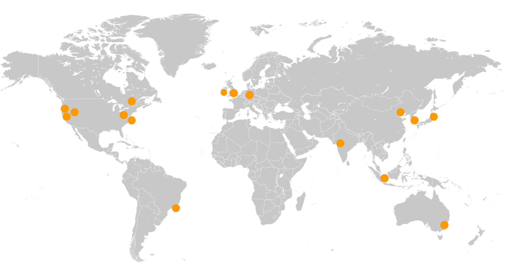
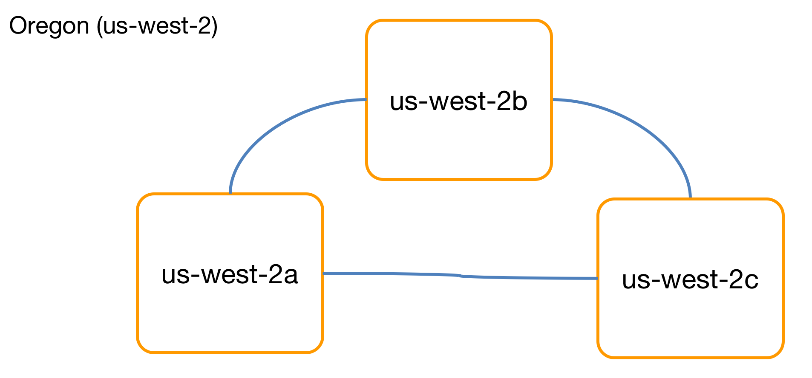
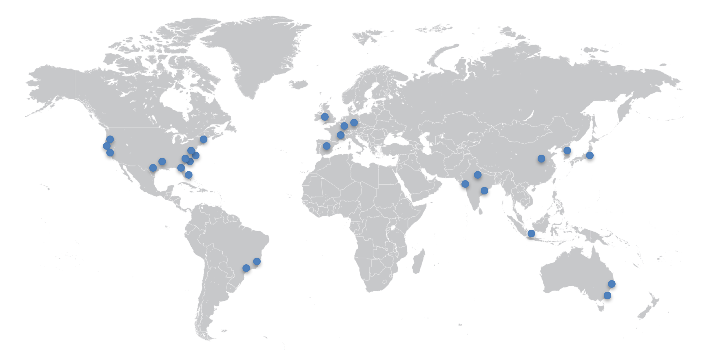
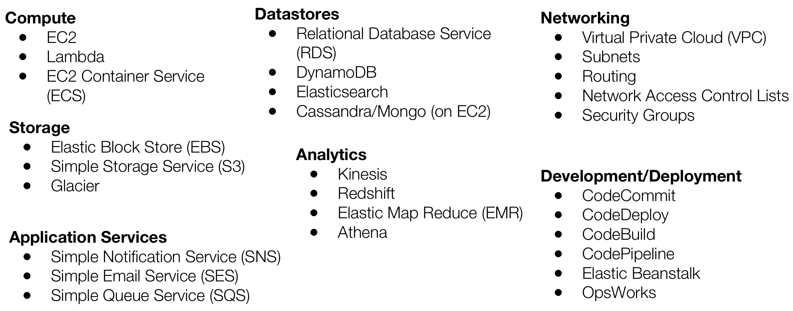

Getting Started With
Amazon Web Services
Just Essentials..
By Satya Sudheer
Agenda
-
Amazon Ecosystem
Regions, Availability Zones, Edge Locations, Networking
-
Services
Compute Services, Storage Services, Datastore Services
-
Misc..
Reliability, Security, Monitoring, Logging, Deployment, Analytics
Regions

Availability Zones

Edge Locations

Amazon Ecosystem - 1000ft view
